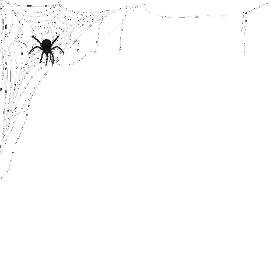
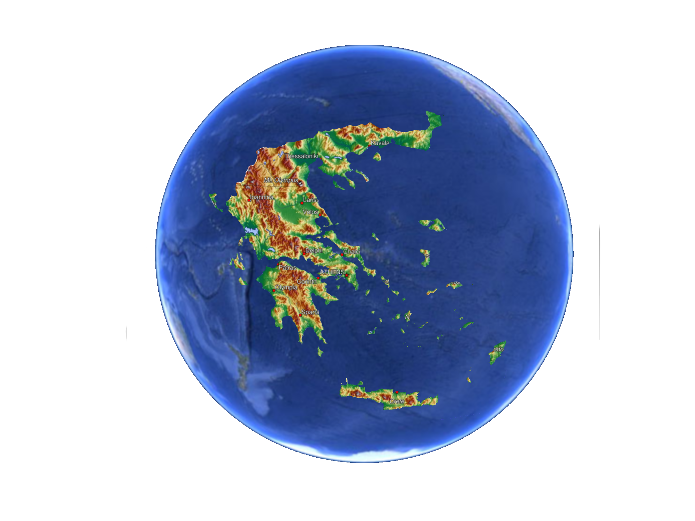

Welcome to a journey through the hidden, haunted, and forgotten places of Attica, Greece. This website is a map to abandoned houses, mysterious buildings, and locations surrounded by local legends, where history and imagination meet. Explore the stories behind these places, discover their locations, and uncover the secrets they may hold. Inspired by Greece’s rich tradition of folklore, where tales of fantasmata (ghosts), restless spirits, and unexplained happenings have been passed down through generations, this project invites you to become part of the story. Share your own experiences, tell us what you have discovered, or leave a comment after visiting a location. Every place has a past, every story has a voice, and every visitor may uncover a new mystery.